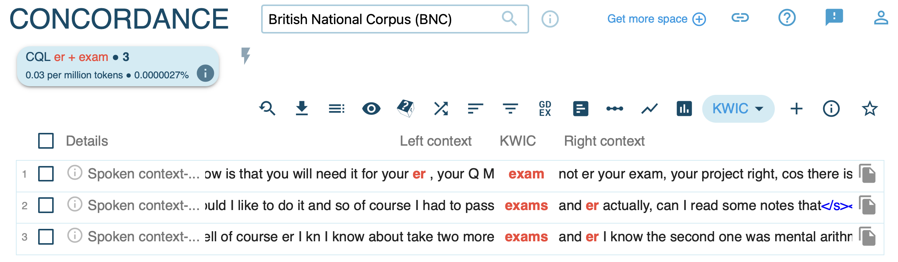

Semantics: Studying meanings and functions of words
Seminar ‘Lexicology’
Quirin Würschinger, LMU Munich
June 18, 2025
Outline
- Warm-up: Your intuitions about clippings.
- Theory: The Principle of No Synonymy & Distributional Hypothesis.
- Practice: Analysing clippings with corpus tools.
- Discussion: Sharing your findings.
Warm-up exercise
- In pairs (2-3 mins):
- Brainstorm 3-5 clippings in English (e.g., uni, info).
- For each, discuss: Does the clipping mean exactly the same as the full word? If there are differences, what are they?
- Are there situations where you would use one but not the other?
- Be prepared to share your examples!
Research questions
Hilpert, Martin, David Correia Saavedra & Jennifer Rains. 2023. Meaning Differences between English Clippings and Their Source Words: A Corpus-Based Study. ICAME Journal 47 (1): 19–37. https://doi.org/10.2478/icame-2023-0002
- How do clippings (e.g. dorm < dormitory) and their source words differ in meaning?
- Are there semantic or pragmatic differences?
- Can we find generalisations about their meaning relations?
- How should we describe these relations?
(cf. Hilpert et al., 2023, p. 19)
Abstract
- Goal: study meaning differences between clippings and source words.
- Method: corpus data and distributional semantics.
- Data: 50 English clippings, 100 examples each from COCA.
- Findings:
- clippings appear in more “involved” contexts (→ signal familiarity).
- clippings and source words have different distributional profiles.
- Framework: Construction Grammar, Principle of No Synonymy.
Theoretical framework: Meaning of clippings
- One view: clippings and source words are alternatives that only differ in form, not meaning (Dressler 2000).
- Example: mic vs. microphone.
(cf. Hilpert et al., 2023, p. 20)
Theoretical framework: Principle of no synonymy
- A difference in linguistic form always indicates a difference in meaning (Goldberg 1995).
- “Meaning” is broad: semantic, discourse-functional, interpersonal, etc.
- Prediction: clippings and source words should have distinct distributions, reflecting functional differences.
(cf. Hilpert et al., 2023, p. 21)
Theoretical framework: Distributional hypothesis
- The meaning of words is reflected in their contextual elements in language use (Firth 1957).
- Words that appear in similar contexts share aspects of their meanings.
- Example: cardiovascular and hypertension share collocates like heart, disease, diabetes, stroke.
(cf. Hilpert et al., 2023, p. 21-22)
Data
- Sample of 50 English clippings and their corresponding source words.
- Corpus data from COCA for each clipping and source word.

Method
- Collocation analysis to investigate semantic profiles across contexts.
- Word embeddings to compare distributional profiles across text types and individual clippings.

Results
Variation across text types

Semantic differences
Differences in collocations for cardiovascular vs cardio

Your Task
- Choose one of the word pairs from the Hilpert et al. (2023) study.
- Use the corpus methods we’ve just seen (collocations, word sketches) to analyse their differences.
- Use the “Guiding Questions” on the next slide to structure your analysis.
- Prepare to briefly share your findings with the class.
Collocation analysis
- Run a query (e.g.
[word="brother"])

- Click the collocation analysis icon

- Configure window range and statistics

Word sketches: Single forms
1. Generate a word sketch for a clipped form (e.g. bro), specifying the word class.
2. Examine syntactic contexts.
Word sketches: Comparison
- Compare source words and clipped forms (e.g. brother vs bro).
- Review shared and unique collocates.
- Inspect collocations in detail.

Guiding questions
- What is the general semantic signature of the source word?
- What is the general semantic signature of the clipped form?
- In what ways do they differ (stylistic, social, formality)?
- Do they occur in different syntagmatic contexts despite similar denotation?
- Does the clipped form have a narrower scope of meaning?
Summary
- A difference in form implies a difference in meaning. (Principle of No Synonymy)
- This applies even to seemingly simple shortenings like clippings.
- Meaning is use. The contexts a word appears in tell us about its function. (Distributional Hypothesis)
- Clippings are not just lazy shortcuts. They develop unique semantic, pragmatic, and social functions, often signalling familiarity and appearing in more “involved” contexts.